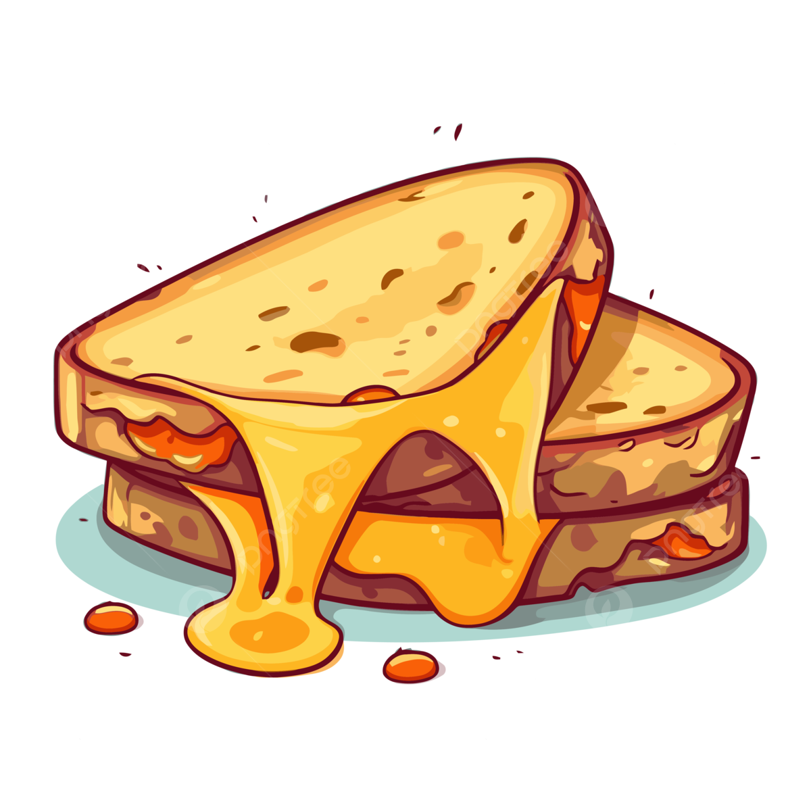

Navigation
Grilled Cheese Sandwich
Description
This is a recipe for Grilled Cheese Sandwich which I found on the internet.
This is the second recipe I found on the internet for this project
I chose this recipe because I wanted a short recipe so I didn't have to make long lists.
Ingredients
- 8 slices of bread
- 2 tablespoons of butter
- 8 slices of cheddar, or Swiss, provolone, white cheddar, or any other cheese of your favourite kind
Steps
- Butterboth sides of the bread slices
- Layerthe cheese and bread
- Cookthe sandiwch on a hot skillet until the cheese is melted and bread golden brown
- Servewith honey mustard sauce or any other dip of your choice